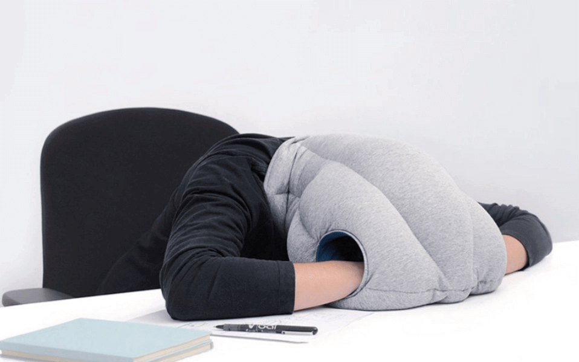

Napping Technology: Where Nappiness Begins
Angela Zhang 7/28/2020
Everyone needs sleep. But most people don’t get enough of it at night. So what’s the solution? Napping! And with the aid of cutting-edge napping technology, your snooze session can become even more enjoyable.
Sleep is absolutely necessary for the wellbeing of great minds. Too often, hardworking students and employees will dismiss sleep as something trivial— a mere pit stop on the route to success. Modern-day workaholic culture perpetuates the idea that resting is for the weak, when in reality, it serves to boost your performance rather than hinder it.
Sleep is proven to reduce heart problems, stress, inflammation, as well as depression. A sleep-deprived body will enter a state of stress, which increases blood pressure levels along with risk for heart attacks and strokes. The higher output of stress hormones will also lead to more inflammation in the body, which will cause deterioration in bodily functions as you age. Getting an adequate amount of sleep boosts your body’s serotonin levels and helps prevent depression, which is linked to a lack of serotonin. Even if you don’t get your recommended hours of sleep at night, taking a nap during the day can still improve your performance.
But as long as workplace culture has existed, napping on the job has been a big no-no. How can you be a dedicated employee if you’re dozing off in the middle of your work? If the answer seems obvious, you might want to think again. Companies have recently been reassessing the stigma surrounding snoozing in the workplace. High-profile corporations like Google and Facebook are encouraging their employees to get some shut-eye during the workday by installing nap pods in their offices such as the one shown below.
Studies show that taking a short nap each day has profound benefits— not only toward reinforcing long-term health but also for boosting alertness, concentration, and productivity. Taking a snooze allows for your brain to take a moment to process and store new information, which strengthens your memory. It also gives you an opportunity to sort through your emotions and emerge with a refreshed mood. Just like that, 20 minutes in one of these bad boys can relieve tension, restore energy, and renew motivation to work diligently again! Pods like these are most notably produced by the company MetroNaps, which equips each one with its very own privacy visor, speaker system for soothing background music and ambient lighting to lull you to sleep.
Unfortunately, not every company or aspiring napper can afford one of these pods, which cost between $8,000 to $12,000 each. So here are some less expensive options that will still elevate your napping experience wherever you choose to nap.
The Ostrich Pillow, for one, is a popular product of nap technology that puts the fun in functional. To use, you simply slip the pillow over your head like a helmet. The front-facing gap allows for easy breathing, and you can slip your hands into the two slots on the top for more snugness.

(Ostrichpillow)
The pillow cocoons your head in soft fabric padded with microbeads that prevent outside noise and light from disturbing your slumber. The design of the Ostrich Pillow is effective at deepening the darkness of your sleeping environment, which is a crucial contributor toward quality sleep. Melatonin, the sleep hormone, signals to the brain that it’s time to rest, which triggers muscle relaxation, a drop in body temperature, and heightened drowsiness. Your body’s melatonin levels naturally rise as daylight diminishes and darkness increases during the night. Since the Ostrich Pillow immerses you in a micro-environment that guards against intrusive light, it coaxes your body into making its physiological progression toward slumber.
MonPère’s Moldable-Hands Travel Pillow is another innovation that defies the standards for a conventional pillow.
(Gearnova)
Napping in a seat sans neck pillow is never a pleasant experience, what with all the head-drooping and neck-flopping. And yet, a pillow that doesn’t provide the proper support for your head and neck will still create tension in your neck muscles, which can lead to neck pain. Oftentimes, the discomfort will make you wish you just had someone holding your head in place for you. And that’s where these ultra-plush bendy fingers come in hand-y! You secure the pillow around your body or the back of your seat using its flexible silicone core and the padded palms provide much-needed support for your naptime.
It’s very versatile as well. As everyone has their own preferred sleeping position, this product allows you to tailor your usage exactly to your liking. Its linear shape makes certain that your head stays aligned in its axis, which eliminates neck soreness and back pain from your napping experience. It is important to assume a correct position while sleeping because poor posture will lead to poor blood circulation, increased tension in the body, and oftentimes interruptions in your slumber.
Finally, the last piece of nap technology in store for you is the EZ-Inflate Cloud Sleeper. This product is specifically designed for front-folding sleepers and is especially convenient for plane flights as it can be deflated into a portable sack. It keeps your spine properly aligned so your sleeping position is comfortable, and it provides essential support for your head, neck, and upper back. Keeping your spine aligned with its natural curvature is important because it ensures that there is no unwanted pressure on your lower back.

(Gearnova)
With a few breaths, you can get this pillow pumped up for maximum comfort in no time. Not only can you relax like you’re getting a massage, but you can also take advantage of the hollow body to use your phone.
With greater strides in the development of state-of-the-art technology happening each day, the potential for quality napping is limitless. Take advantage of these tools to replenish your body with the rest it deserves.
Cover Photo: (Shutterstock/Forbes)